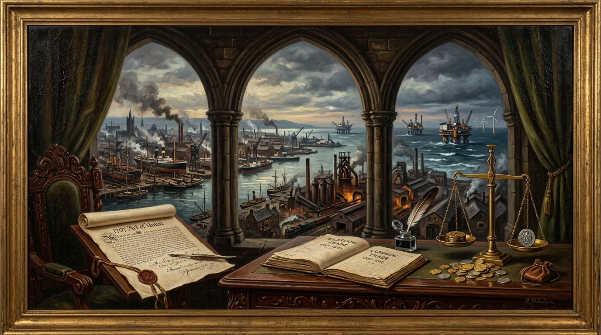

How the Perfidious Westminster Greedy Mugged Scotland, 1707-2026
An Examination of Wealth Power and Fiscal Control.

“This distinction between generation and control lies at the heart of the modern constitutional argument. A nation may generate wealth while another institution determines how that wealth is taxed, allocated and spent.” — Trevor Swistchew
Fiscal Dossier: Wealth Generation vs. Parliamentary Control
Three Centuries of Scottish Revenue, Imperial Expansion, and Treasury AccountingThe Structural Separation of Production and Fiscal Authority
With the 1707 Act of Union, Scotland surrendered sovereign legislative control over customs, excise, coinage, and national borrowing to Westminster. While Scottish enterprise transformed Glasgow into an Atlantic mercantile capital, Lanarkshire into an iron powerhouse, and the Clyde into the world’s foremost shipbuilding hub, the revenues were pooled into a unitary British Treasury. When vast North Sea hydrocarbon reserves were tapped in the late 20th century generating billions annually (£9B in 2022-23), London absorbed the receipts into general state spending rather than erecting an intergenerational sovereign wealth fund on the Norwegian model.
The history of Scotland’s economic relationship with Westminster is often discussed through the language of politics, identity and constitutional change. Yet before any political conclusion can be reached, a more basic question must be addressed. What can actually be established from the historical evidence? What wealth was generated in Scotland, who controlled it, and how much certainty is possible when examining more than three centuries of shared government under the Union?
Absolute honesty requires acknowledging both what is known and what cannot be known with precision. It is possible to demonstrate that Scotland generated enormous wealth over the course of the Union. It is possible to demonstrate that control over taxation, customs, borrowing and national fiscal policy passed to Westminster after 1707. It is possible to demonstrate that North Sea oil and gas revenues were collected by the United Kingdom Treasury. It is not possible to produce a complete ledger showing every pound raised in Scotland and every pound spent for Scotland from 1707 to 2026, as no such historic accounting record exists.
The Union of 1707 fundamentally changed Scotland’s constitutional position. The Scottish Parliament ceased to exist as an independent legislature and authority over customs, excise, trade regulation and major fiscal decisions became concentrated within the new Parliament of Great Britain. From that point forward, taxation policy and state expenditure were determined through institutions based in London. This constitutional transfer is not disputed. It is a matter of historical record.
In the decades following Union, Scotland experienced significant economic growth. Access to imperial markets provided opportunities that many Scottish merchants exploited successfully. Glasgow became one of the major commercial centres of the Atlantic world. Tobacco imports generated substantial fortunes among merchant families. Expanding trade networks connected Scotland to North America, the Caribbean, Europe and beyond. The resulting commercial activity generated wealth within Scotland, but the overall fiscal system into which duties, customs revenues and other taxes flowed was now a British rather than a Scottish one.
This distinction between generation and control lies at the heart of the modern constitutional argument. A nation may generate wealth while another institution determines how that wealth is taxed, allocated and spent. The evidence demonstrates that Scotland participated actively in the growth of Britain and the Empire, but it also demonstrates that the principal machinery of fiscal decision-making sat at Westminster rather than in Scotland.
The nineteenth century transformed Scotland into one of the world’s great industrial regions. Coal mining expanded dramatically. Lanarkshire became one of the most productive industrial areas in Europe. Iron production reached remarkable levels. Engineering firms acquired international reputations. Dundee’s textile sector connected Scotland to global markets. Above all, the River Clyde became synonymous with shipbuilding excellence.
The significance of Clyde shipbuilding cannot easily be overstated. Ships constructed in Scotland travelled throughout the world. Commercial vessels, naval ships and engineering achievements helped sustain British trade and imperial communications. The success of these industries created employment and prosperity for many communities. They also generated taxes through wages, profits, exports and commercial activity.
What cannot be quantified with certainty is how much of the resulting Treasury income can be described as uniquely Scottish. The reason is territorial accounting systems did not exist during most of this period. Revenue was collected for Britain as a whole. Historical records therefore allow historians to identify industries, production levels, exports and growth, but not always to calculate precisely what portion of Treasury receipts originated in a particular area. Nevertheless, it is beyond dispute that Scotland made a substantial contribution to Britain’s industrial and commercial development. Coal, steel, engineering, shipping and manufacturing formed important components of the wider British economy. The benefits of this activity were distributed unevenly across time and place, but the scale of Scottish contribution itself is not seriously questioned by historians.
The same pattern continued into the twentieth century. Scotland remained strategically significant through its heavy industries, shipyards, engineering facilities and energy production. During both world wars Scottish industrial centres contributed substantially to military production and logistics. Decisions regarding war finance, borrowing and expenditure were taken through the British state. Scotland participated in these efforts as part of the United Kingdom rather than as an independent fiscal entity.
The period after the Second World War saw major changes. Heavy industry entered long-term decline. Global competition increased. Traditional sectors faced significant challenges. Shipbuilding contracted. Coal mining was progressively reduced. Manufacturing declined in many areas. These developments had profound social consequences for communities built around major industries.
Critics of Westminster frequently argue that decisions affecting Scottish industry were made by governments whose priorities lay elsewhere. They contend that deindustrialisation was accelerated by policies developed at UK level rather than Scottish level. Others argue that industrial decline reflected international economic pressures affecting many developed countries and cannot be attributed solely to decisions made in London. An honest assessment recognises that both structural economic factors and political choices played roles. What can be verified is that ultimate authority over most macroeconomic policy resided with Westminster and Whitehall rather than Scotland itself.
No issue has shaped the modern debate more than North Sea oil and gas. The discovery and development of offshore oil resources during the latter half of the twentieth century transformed discussions about Scotland’s economic potential. Large hydrocarbon reserves were extracted from waters adjacent to Scotland. Questions immediately emerged regarding ownership, taxation and long-term benefit.
Official statistics confirm that oil and gas production generated significant revenues for the United Kingdom Government over many decades. According to HM Revenue and Customs, government revenues from UK oil and gas production reached £9 billion in 2022-23 and £4.5 billion in 2024-25, although annual receipts fluctuate according to prices, production levels and taxation arrangements.[6][5]
The importance of these revenues extended beyond the numbers recorded in individual years. For many critics of Westminster, the central issue was not simply the amount collected but the destination of that money once collected. Oil revenues entered the UK Treasury and became part of wider UK public finances. They were not placed into a dedicated Scottish account. Nor was a sovereign wealth fund established on the Norwegian model.
This comparison with Norway remains influential because both nations possessed access to offshore petroleum resources. Norway ultimately established a sovereign wealth fund that accumulated oil wealth for future generations. The United Kingdom followed a different course. Petroleum income entered general government revenues and was spent within the normal structures of public expenditure. Whether that decision was wise remains a matter of political disagreement. What is not disputed is the mechanism itself. Official statistics show that oil and gas revenues were collected and managed at UK level.[5][7]
The famous political slogan “It’s Scotland’s Oil” emerged from precisely this context. Supporters argued that Scotland possessed considerable natural wealth and should exercise direct control over it. Opponents argued that the resources belonged within the constitutional framework of the United Kingdom and that revenues should therefore be pooled across the state. The disagreement persists because it concerns competing interpretations rather than competing facts. The existence of the resource is a fact. The collection of taxes through UK institutions is a fact. The political judgement regarding who should have controlled those revenues is a different question.
The re-establishment of the Scottish Parliament in 1999 altered the constitutional landscape but did not create full fiscal sovereignty. Devolution transferred significant powers to Edinburgh, yet many important areas remained reserved to Westminster. Borrowing powers were limited. Most macroeconomic policy remained under UK control. National Insurance, defence, monetary policy and substantial elements of taxation continued to be administered on a UK-wide basis.
This situation has contributed to continuing disputes regarding Scotland’s finances. Every year the Scottish Government publishes Government Expenditure and Revenue Scotland, commonly known as GERS. According to the Scottish Government, GERS is an Accredited Official Statistics publication that estimates the revenue raised in Scotland and the cost of public services provided for Scotland.[1][2]
GERS occupies a controversial position in political debate. Supporters regard it as the most comprehensive assessment available of Scotland’s fiscal position within the United Kingdom. Critics question aspects of the methodology and argue that important assumptions influence the results.
The Scottish Government’s own methodological documentation provides important context. It explains that some figures can be measured directly while others must be estimated because revenues and expenditures are often recorded on a UK-wide basis rather than separately for Scotland. The methodology notes that multiple data sources are combined to produce estimates consistent with UK public finance statistics.[3][4]
This point is crucial because it relates directly to claims of transparency. There is evidence that substantial fiscal information concerning Scotland is published. GERS itself is publicly available. Methodological documents are publicly available. HM Treasury publications, Office for National Statistics material, and HM Revenue and Customs energy revenue statistics are publicly available.[3][4][5]
At the same time, critics maintain that publication is not synonymous with complete transparency. Their argument is that Scotland lacks fully independent territorial accounts covering every area of state activity. Because some figures are estimated rather than directly observed, disputes naturally arise regarding allocation methods and assumptions.
An entirely honest assessment must therefore reject two exaggerated positions. It is inaccurate to claim that no fiscal information is published regarding Scotland. A large amount of information is published. It is equally inaccurate to claim that every historical revenue flow can be measured with perfect certainty. The statistical authorities themselves acknowledge that estimation is necessary in some areas.[3][4]
The most recent official figures continue to illustrate the scale of Scotland’s economy. Government Expenditure and Revenue Scotland reported that revenues raised in Scotland totalled approximately £98.3 billion in 2025-26, including a geographical share of North Sea revenues. The same publication estimated Scotland’s net fiscal balance within the current UK constitutional framework.[2]
These contemporary figures are important because they demonstrate that Scotland remains a significant contributor to economic activity within the United Kingdom. However, they do not resolve the constitutional question. They cannot determine what Scotland’s finances would look like under different arrangements because GERS itself is designed to describe Scotland as part of the United Kingdom. The methodology explicitly states that the statistics reflect the current constitutional situation.[3]
As a consequence, the central debate remains unresolved after more than three centuries of Union. One interpretation emphasises the pooling of resources. From this perspective, Scotland shared in the benefits of a larger state, wider markets, common institutions and redistribution of expenditure across the United Kingdom. The other interpretation emphasises control. From this perspective, Scotland repeatedly generated wealth through industry, energy production, commerce and natural resources while lacking authority over the central Treasury into which much of that wealth flowed.
The Constitutional Axiom:
“Those facts reveal a Scotland that contributed greatly to the economic development of Britain and a constitutional system in which ultimate fiscal control rested not in Edinburgh but at Westminster.”
— Trevor Swistchew • 2026
The established facts are substantial. Scotland lost independent control over national taxation and fiscal policy in 1707. Scotland subsequently generated significant wealth through commerce, industry, manufacturing, engineering, shipbuilding, financial services, whisky production and energy extraction. Westminster controlled the principal fiscal institutions of the state. North Sea oil and gas revenues were collected through UK taxation systems and flowed into UK public finances. Official data regarding Scotland’s revenues and expenditures are published annually, but some allocations require statistical estimation because the UK accounting system was not originally constructed as a set of separate national accounts.[3][4][5][1]
Beyond these points, certainty becomes more difficult. No comprehensive historical ledger exists recording every pound generated in Scotland and every pound spent on Scotland from 1707 onward. For that reason, sweeping claims of exact gains or exact losses should be treated cautiously. Serious analysis requires recognition of both the strengths and limitations of the available evidence.
The history of Scotland within the Union is therefore neither a simple tale of exploitation nor a simple tale of partnership. It is the history of a nation that generated considerable wealth while participating in a larger political state whose central institutions exercised authority over taxation, borrowing and expenditure. Whether that arrangement represented mutual benefit, economic extraction, or some combination of both remains a matter for political judgement. The underlying facts, however, deserve to be examined carefully, honestly and without exaggeration. Those facts reveal a Scotland that contributed greatly to the economic development of Britain and a constitutional system in which ultimate fiscal control rested not in Edinburgh but at Westminster.
© 2026 Trevor Swistchew. All rights reserved.